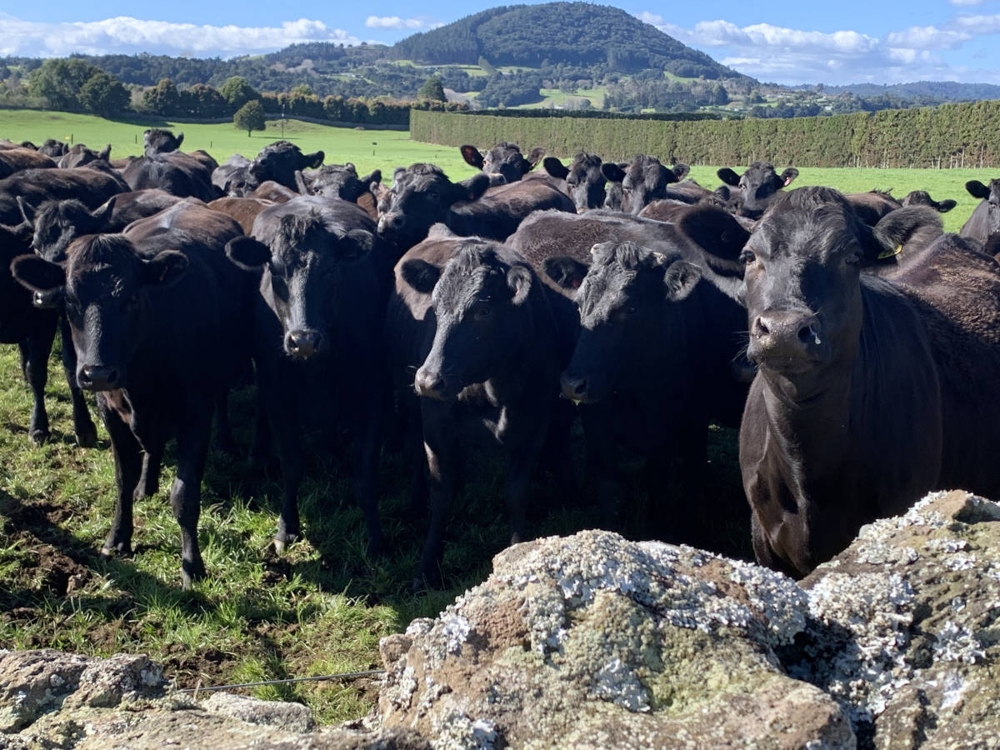
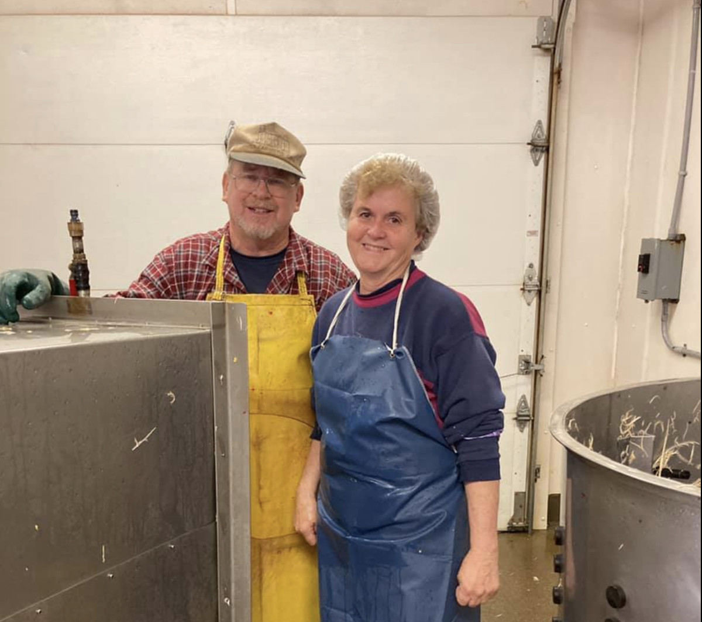
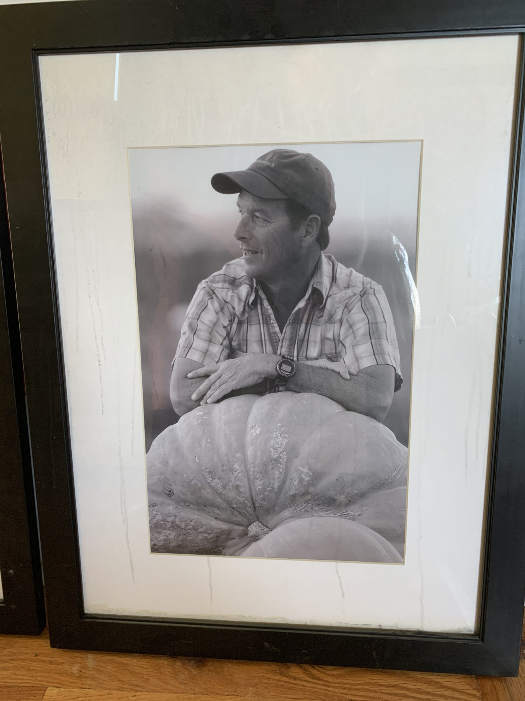
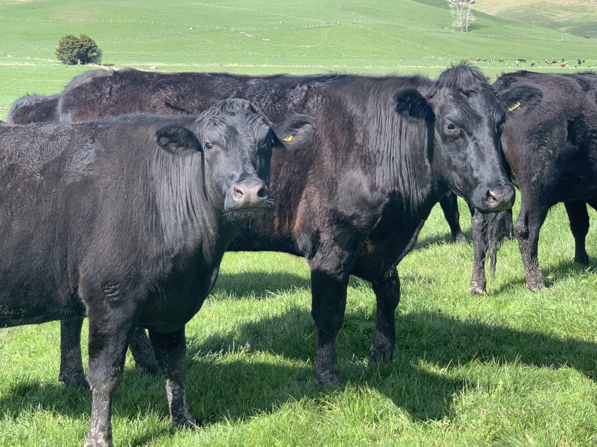

SALT’s Mission
At SALT, our passionate commitment to sustainability inspires everything we do. We source quality ingredients from local farms and believe the shortest distance from the farm to the table is best. We only serve grass-finished beef, GMO-free chicken, and pork, and we purchase organic Wisdom Farm eggs from Haxtun, Colorado. By sourcing locally, we know where our produce comes from and the person who grew it.
Not only does this showcase what farmers in Colorado do so well, but it gives our guests the opportunity to support their neighbors and friends. Our food bridges the gap between healthy, delicious, and sustainable, creating a unique experience for our guests.

Where we source
-
Full Circle Farms
Longmont, Colorado
Dave Asbury
-
Kilt Farm
Longmont, Colorado
Michael Moss
-
Toohey & Sons Organic
Hygiene, Colorado
Christian Toohey
-
Hazel Dell Mushrooms
Fort Collins, Colorado
Jared Scherger and Lucina Womack
-
Wisdom Farm
Haxtun, Colorado
Jay Wisdom
-
First Fruits Organic Farm
Paonia, Colorado
Kris and Kevin Kropp
-
First Light
Havelock, New Zealand
Grass-fed and finished Wagyu beef
Gerard Hickey, Jason Ross, and Greg Evans
-
Agridime
Fort Worth, Texas
Former listing


